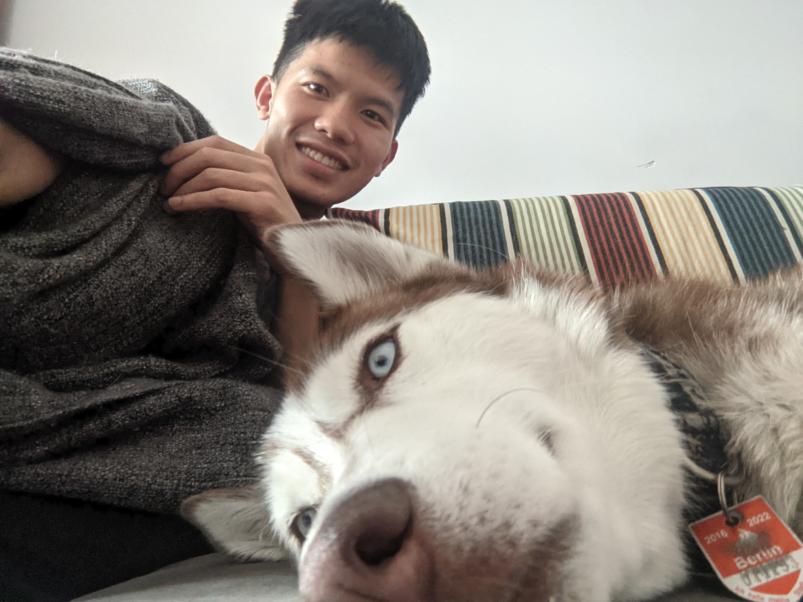

My name is Chien 劉謙
I grew up in Taiwan, and I am undertaking master degree of Computational Science and Engineering in Universität Rostock. I am a software engineer and currently working as data scientist intern at Teraki in Berlin. When I'm not coding, I enjoy playing board games, badminton, and cooking.
Experience
-
April 2021 - Present
Data Scientist Intern @ Teraki
- * Speed up Python Aglorithms by 10 times with Cython
- * Develope image processing algorithm using Python, NumPy, SciPy, OpenCV
- * Initiate end-to-end deep learning for radar object detection implemented in PyTorch
-
October 2018 ~ June 2020
Research Assistant @ ElsaLab
- * Delivered state-of-the-art visual odometry solution on KITTI benchmark using Tensorflow
- * Designed machine learning strategy trained on distributed servers and Google Cloud Platform (GCP)
- * Sensors retrieval for Lidars and stereo cameras
- * Robots control for self-driving automobiles and robot arms using Robotic Operating System (ROS)
-
May, 2019 ~ August, 2019
Student Research Assistant @ National Tsing Hua University
- * Led industrial-academic collaboration project -Intelligent Malabar Chestnut Seeding Machine
- * Designed image classification algorithm for seed orientation to improve production rate by 90 percent
- * Implemented automation control system for motors and pneumatic system with C language
Software Projects

Robot Navigationmore_vert

Image Alignmentmore_vert
Image Alignmentclose
Adjust time-lapse photos of a tree by feature matching and homography transformation.
See Github Repo here